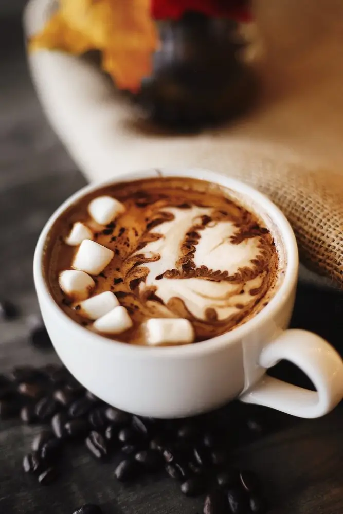
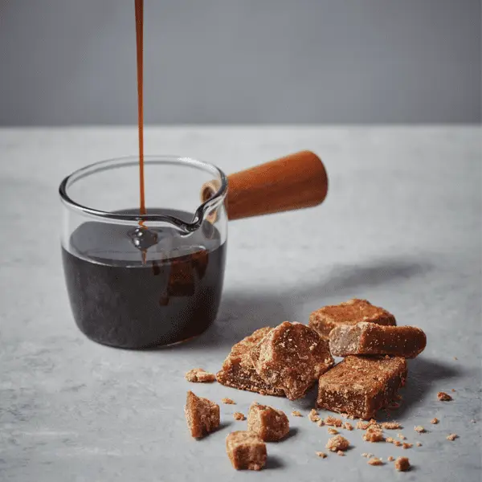
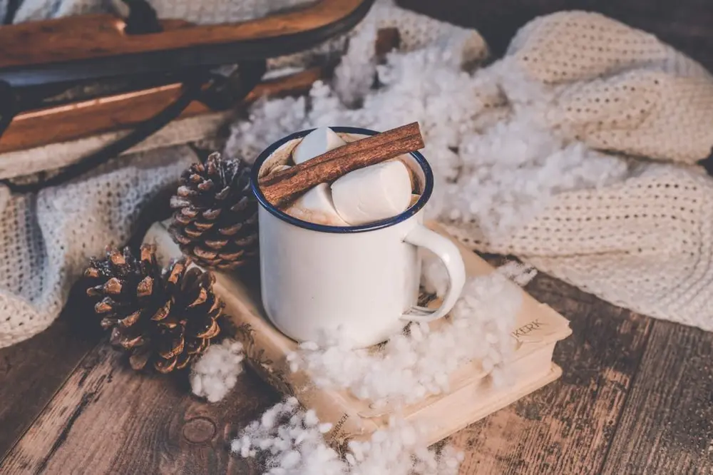
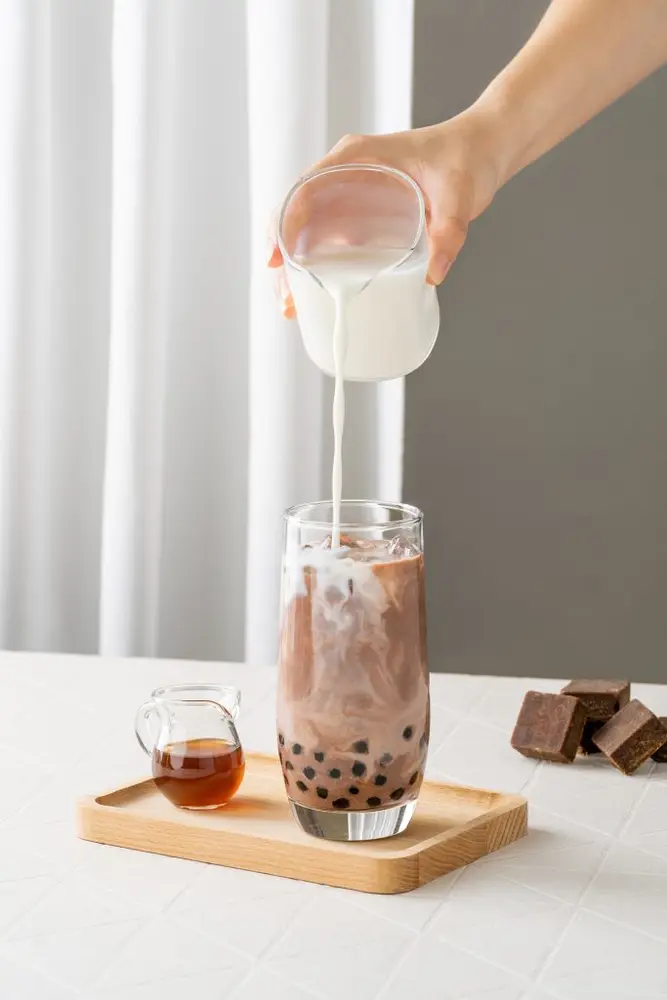

Articles / Recipes
Warm up with brown sugar boba chocolate!
2023-11-08 · Recipes

Original public content from Yen Chuan. Product claims and specifications remain subject to confirmation by the company.
As winter creeps in and the nights start getting chilly, it’s time to wrap up warm and enjoy some hot drinks! While hot chocolate is ever the classic winter treat, there’s many ways to give the ol’ cocoa an extra kick. Why not try adding some bubble tea flair with brown sugar boba?
Read on to find out more!

Wintery hot chocolate
Although we often see hot chocolate as a sweet wintery treat, did you know that this drink used to be spicy?
It’s said that cocoa was first drunk by ancient Mesoamericans, including the Mayans and the Aztecs. They ground cacao seeds into a paste, then mixed in water, chillis, cornmeal and other spices. Afterwards, they pour the mixture between different vessels to create a foamy, spicy and bitter drink.
The drink soon spread to Spain and the rest of Europe, where people turned it into a sweetened drink instead. People added spices, sugar and milk to the mixture, creating the hot chocolate we know and love!
Sweeten the deal with brown sugar!
While regular hot chocolate is certainly a rich, sweet treat in itself, brown sugar takes it to the next level!
The mollassy, smoky flavours of brown sugar blends well with the cocoa’s sweetness and slight bitterness, boosted by the rich creaminess of the milk.
Meanwhile, the tapioca pearls not only adds some extra brown sugar, but also a playful chewiness to the drink. Tired of the usual marshmallows and chocolate flakes? Tapioca pearls are the perfect choice!


Take it further!
Want to take your hot chocolate even further? Here’s some more ideas!
Cream tops are not only a staple in bubble tea, but also a great companion for various hot drinks. The rich, foamy milk is the perfect replacement for whipped cream! With different flavours to choose from, cream tops can add a dash of flavour too.
Once you have a thick, foamy cream top, dust it with brown sugar or cinnamon powder, or swirl in more brown sugar syrup!
Want a fluffy topping but getting tired of marshmallows? Mini mochi is a colourful, chewy alternative!
Weather’s not quite cold enough to break out the hot drinks? Transform it into a chocolate smoothie by adding ice! By swirling the brown sugar syrup around the glass, you can create beautiful patterns too!
Brown sugar boba chocolate
A match made in heaven between chocolate and brown sugar, enjoy this rich, delicious winter drink!
What you’ll need
How to make
Mix the powder with 200g water or hot milk. Set aside
Add ice cubes to a glass (if served cold), then add the cooked tapioca pearls. Carefully pour a small amount of syrup along the glass walls, rotating the glass to create patterns.
Pour in the chocolate mix and serve!

Give yourself a treat!
Ready to give your drink a bubble tea boost? Get the ingredients and try it out!